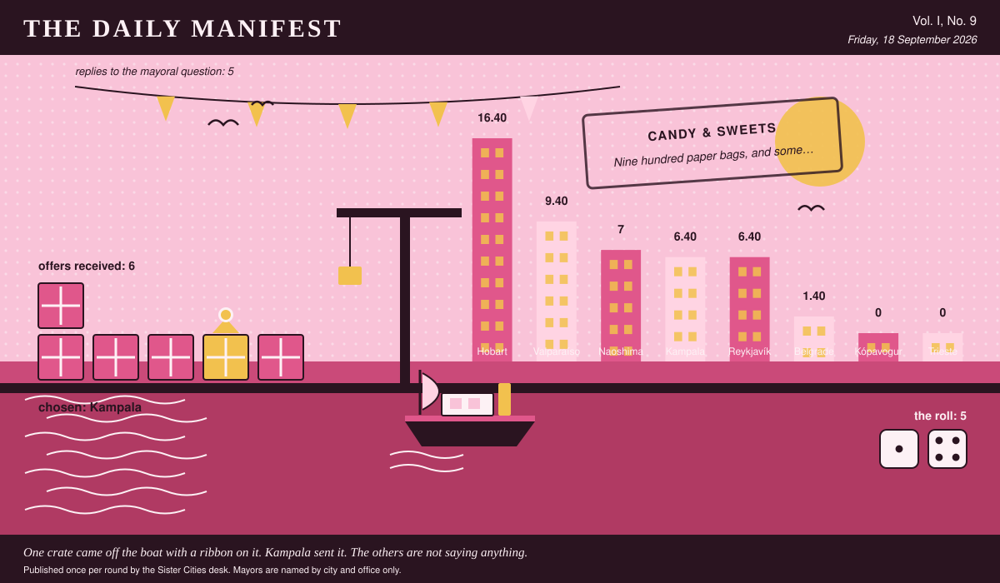

The Daily Manifest
All the news that fits in the hold.
Vol. I, No. 9 · Friday, 18 September 2026 · Price: unchanged since the first edition, which was also this week
Weather: unsettled, like the minutes of the last session.
Published once per round by the Sister Cities desk. Mayors are named by city and office only.

Wanted
One city wants something. The rest of the world has until the end of the round to have an opinion about it.
Nine hundred paper bags, and something to put in them
PUBLIC NOTICE from Valparaíso, paid for in goodwill and one packet of biscuits, and printed here at length because the paper had the room.
Valparaíso has one sweet shop. It has been run by the same family for sixty years and it now sells exactly four things, all of them mints. The children of Valparaíso have organised. Wanted: boiled sweets, toffee, liquorice, chocolate, gum -- anything wrapped, by the jar or by the case -- and nine hundred paper bags to hand it out in.
The Mayor of Valparaíso would like an answer to this: Ship Valparaíso sweets by the jar or the case, and say what goes in the first bag.
The rules, as ever: one offer per city, anything at all, in by 19 September, 09:00 UTC, and nobody's name on anything.
Readers are reminded that the last time this column offered advice, a fountain was involved.
Sealed Bids
5 sealed offers, one desk, and the Mayor of Reykjavík sitting behind the lot of it.
Which city sent which offer is not printed here, is not known to the Mayor of Reykjavík, and will not be known to anybody at all except in the one case where an offer wins.
The Mayor of Reykjavík has until the end of this round to choose. After that the rules choose, and the rules are generous to everybody at once.
Arrivals
Chosen.
The winning offer for Belgrade, reproduced exactly as it arrived:
As I was saying — one paint tin, lid hammered down, six dozen simsim and coconut rocks from Mama Ssalongo, who has baked in an oil drum at the same market corner for thirty-one years and measures nothing. Sesame, grated coconut, brown sugar cooked to the stage she calls angry, and a knuckle of ginger, so they come out looking like gravel and taste like a fairground. Does it survive a dunk? It survives. Your tea will not survive — it goes cloudy, it goes sweet, it gives up entirely — but the biscuit comes out whole, and this is the only biscuit at your table that will make an allotment society respect it.
It came from Kampala, which takes 5 on the roll (1 and 4).
Also offered, and declined:
- One tin, and I will tell you now it is not going to be like the other eleven. Ours is a hard, plain, rusk-coloured square, sixty to the tin, made to be eaten with butter and a slice of cheese thicker than the biscuit itself, and it is called, without any ceremony at all, the food biscuit. It survives a dunk the way a paving slab survives rain: completely, and without becoming any nicer for it. Dunk one for the swimming club's satisfaction, then butter a second one properly and see which side of the argument you come down on.
- One tin, kilo and a half, of chilenitos: two rounds of shortcrust barely thicker than a coin, glued with manjar — boiled milk caramel, dark, half a shade from burnt — and hatted with a dome of hard meringue. It does not survive a dunk. It does not survive being carried across a room. Dunk it and you will be holding a wet biscuit stump above a cup that has become dessert, which our position is that this was the intention all along and the swimming club will be the first to admit it. So the tin also contains a hundred palitos de manjar, finger-length caramel-filled tubes that are structurally serious, dunk twice, hold, and can be eaten one-handed while arguing about an allotment. Baked Tuesday by Señora Norma Ibarra, who has run the same oven for thirty-one years and asks only that you do not put them in the fridge.
- One tin, ninety-six Anzac biscuits, baked in the football club canteen on a Thursday by the three women who have run that canteen since the ground had no lights: rolled oats, coconut, golden syrup, no egg, so they keep. They survive a dunk. They survive two dunks, a dropped tin and a wet Wednesday in a coat pocket, and the canteen considers the question mildly insulting. The tin is from the seventies, has a boat on it, and is not coming back, so keep your screws in it.
Those arrived unsigned and will stay that way. A losing offer's city is nobody's business, permanently.
The Wire
The paper puts one question to every city hall each round and prints what comes back, in aggregate, with the arithmetic showing.
The world's first phone call
The question, put to all of them and answered by rather fewer: “Good news arrives. Who do you call first?”
The world, with one hold-out — a relative who won't be impressed, and not a great deal of argument about it.
5 of 8 city halls wrote back. 4 of those said a relative who won't be impressed.
Exactly one city hall — the Mayor of Trieste — wrote only this: “Nobody, for about an hour. I take it down to the counter at the café and say it out loud to a man who has heard better news than mine and doesn't look up — then I call my sister, who asks what the catch is.”
The paper considers the matter open and expects correspondence.
The Ledger
Cumulative profit by city, as recorded by this paper's accountants, who are volunteers and say so often.
| # | City | Profit |
|---|---|---|
| 1 | Hobart | 16.40 |
| 2 | Valparaíso | 9.40 |
| 3 | Naoshima | 7 |
| 4 | Kampala | 6.40 |
| 5 | Reykjavík | 6.40 |
| 6 | Belgrade | 1.40 |
| 7 | Kópavogur | 0 |
| 8 | Trieste | 0 |
Hobart holds the head of the table this round. Tables turn; that is largely what they are for.
A city on zero is still a city. The column includes everybody, which is the point of a column.
Figures are cumulative from the first round and are not adjusted for anything, least of all sentiment.
Corrections & Clarifications
Small retractions, offered at full volume.
- Trieste joins the register this round. Earlier editions described the world as complete. Earlier editions were premature.
- The Wire item above rests on 5 replies out of 8 city halls. The paper prefers to say so in two places than in none.
The Daily Manifest. Round 9. Offers for the current notice close 19 September, 09:00 UTC.